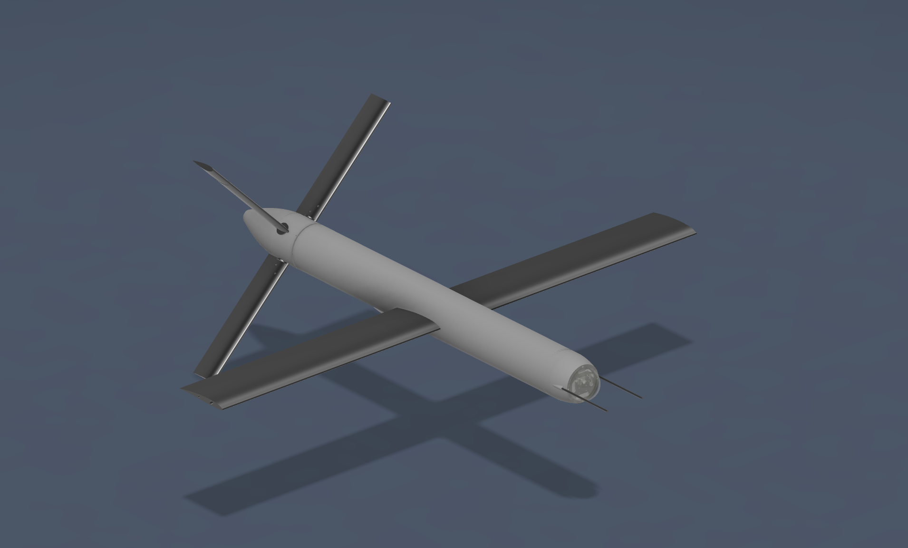
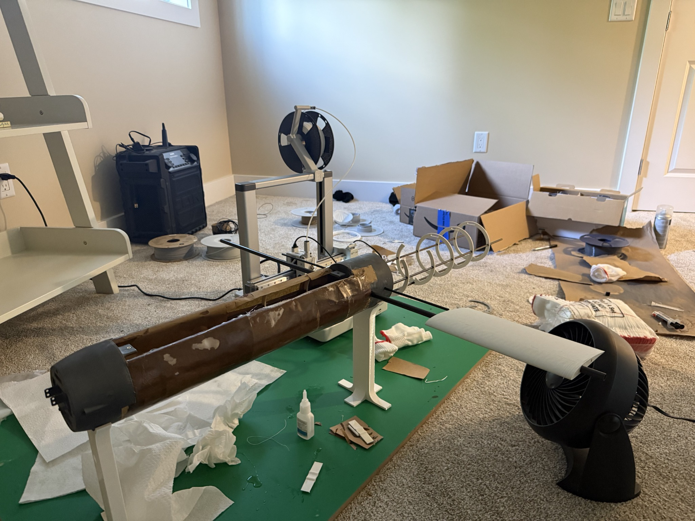
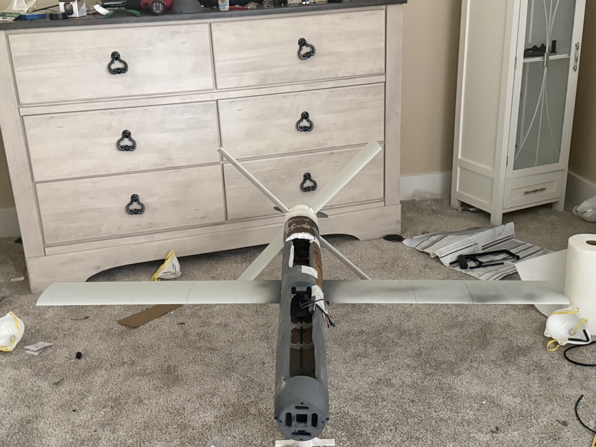
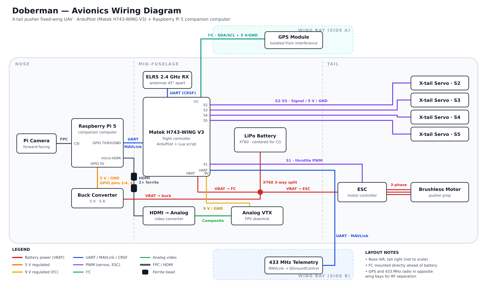
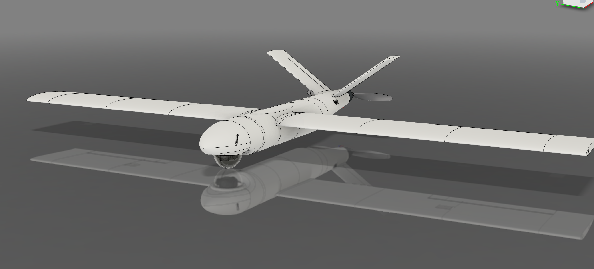
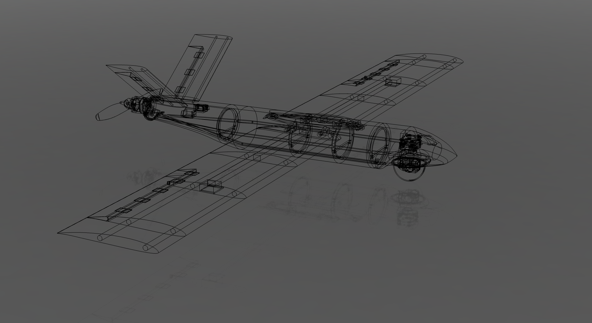
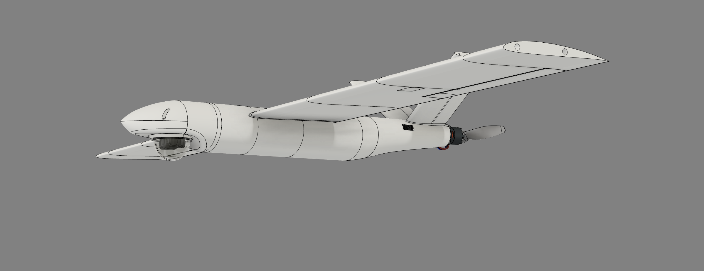
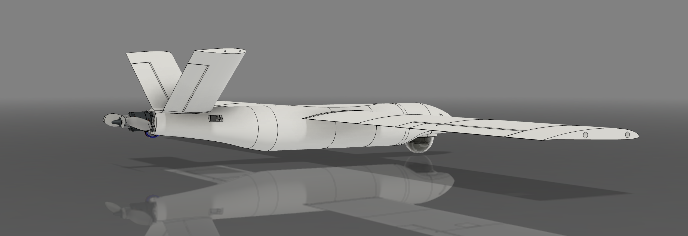

Aircraft · Controls · Computer vision
Doberman
A fixed-wing UAV project combining airframe design, onboard vision, and flight controls.
Doberman V1
Designed and built Doberman V1 in my dorm room, from CAD and printed parts to an assembled aircraft. The design used a semi-monocoque fuselage and a custom X-tail, with an ArduPilot mixer for the four tail surfaces. Integrated onboard detection with the flight controls; bench testing demonstrated the detection-to-control movement pipeline. Built a custom detection dataset with annotations and backgrounds reflecting the flight-test environment; the dataset screenshot shows 17,150 items.
Airframe: 3 kg all-up weight · 1.3 m wingspan · SD7062 airfoil
Flight test: 45 minutes on first flight · 18 m/s measured cruise speed
Vision bench test: ~70 ms inference · ~120 ms end-to-end latency
Doberman V2
I’m developing a redesigned airframe and vision system based on V1’s flight tests. The onboard pipeline uses a Jetson Orin NX, YOLOv26s, optical flow, and Kalman filtering, with development and bench testing underway.
The vision system is being developed for selection between multiple targets, stabilized video with 6× zoom, and continued target tracking. Optical flow and Kalman filtering are intended to estimate relative image motion and predict a target’s position up to two seconds ahead.
What V1 taught me
Doberman V1 crashed on both of its flight attempts. After 45 minutes on the first flight, the aircraft reached approximately 25 m/s with the X-tail at maximum deflection. I had underestimated the resulting root bending moment, and the load tore the brass inserts out of the lower-left tail surface’s PETG mount. I addressed the failure by limiting maximum deflection and using a deeper mount with longer brass inserts for more engagement. On the second flight, a hard crash after takeoff in strong crosswinds caused the landing gear to come apart. An uneven runway and limited low-speed roll authority from the X-tail-only layout also made the takeoff challenging.
Those failures highlighted the need to rethink control-surface attachments, landing-gear load paths, and roll authority as airspeed builds. For Doberman V2, I’m replacing the X-tail with a V-tail, adding wing ailerons, and redesigning the landing gear. I’m fully 3D printing the airframe in sections to make it easier to build and replace damaged parts.
V1 also gave me hands-on experience with semi-monocoque construction, Raspberry Pi and MAVLink integration, EMI and vibration management, PID tuning, and training and evaluating detection models.
Doberman V1 · CAD to build




Doberman V2 · CAD in development




Design: 3–4 kg all-up weight, depending on battery · 1.7 m wingspan
Preliminary modeled estimate: 14–20 m/s cruise, depending on configuration; not yet flight-validated
Vision bench-test targets on Jetson Orin NX: 10 ms end-to-end latency in C++ · 27 ms in Python
Doberman V1: build and test
Watch on YouTubeDoberman V1: onboard computer vision demonstration
V1 used YOLOv8n for detection, mapped the target’s pixel error, and sent attitude commands to the flight controller.
Watch on YouTube